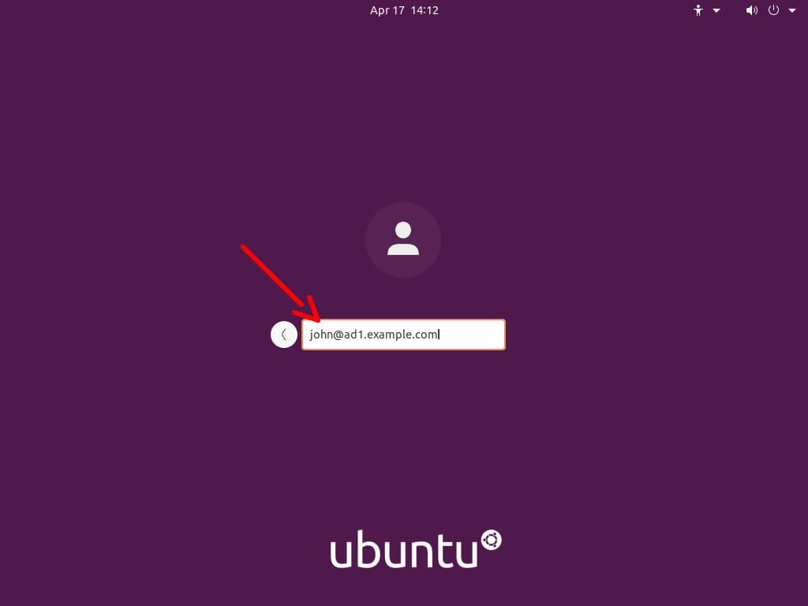

Intégration d’un serveur Linux dans un domaine Active Directory

Objectif du projet
Intégrer un serveur Ubuntu Server au domaine Active Directory afin de permettre l’authentification centralisée des utilisateurs du domaine sur Linux, et d’assurer une cohérence de résolution DNS et de gestion des identités dans l’infrastructure.
Phrase récapitulative
“Jonction d’un serveur Ubuntu au domaine Active Directory via Kerberos et SSSD afin d’authentifier les utilisateurs du domaine sur Linux et centraliser la gestion des identités.”
Technologies et Compétences Mises en Œuvre
- Système : Ubuntu Server 24.04
- Annuaire : Active Directory (AD DS)
- Services : DNS, DHCP
- Authentification : Kerberos, SSSD, PAM
- Outils : realmd, adcli
- Réseau : Configuration DHCP, DNS, résolution de noms
- Diagnostic : vérification identité (id), base comptes (getent)
Architecture mise en place
L’intégration s’appuie sur une infrastructure Active Directory existante et un serveur Linux membre du domaine :
- Contrôleur de domaine Windows Server (AD DS, DNS, DHCP)
- Domaine : tpluc.lan (à adapter si nécessaire)
- Serveur Ubuntu Server configuré pour utiliser le DNS Active Directory
- Jonction au domaine via realm join
Étapes clés du projet
- Configuration réseau et DNS côté Ubuntu (Netplan)
- Installation des outils (realmd, sssd, krb5-user…)
- Configuration Kerberos et découverte du domaine
- Jonction du serveur Linux au domaine Active Directory
- Configuration SSSD et NSS pour la résolution des comptes AD
- Validation des comptes et groupes AD sur Linux
Résultats et bénéfices
- Authentification des utilisateurs Active Directory sur Ubuntu
- Gestion centralisée des identités (AD) utilisable sur Linux
- Résolution DNS cohérente dans toute l’infrastructure
- Base solide pour l’intégration de services Linux dans un SI Windows
Défis techniques relevés
- DNS : forcer l’utilisation du DNS AD sur Ubuntu via Netplan
- Kerberos : cohérence du realm et résolution des KDC
- SSSD/NSS : rendre visibles les comptes AD via getent/id
- Dépannage : cache SSSD, logs et validation d’authentification